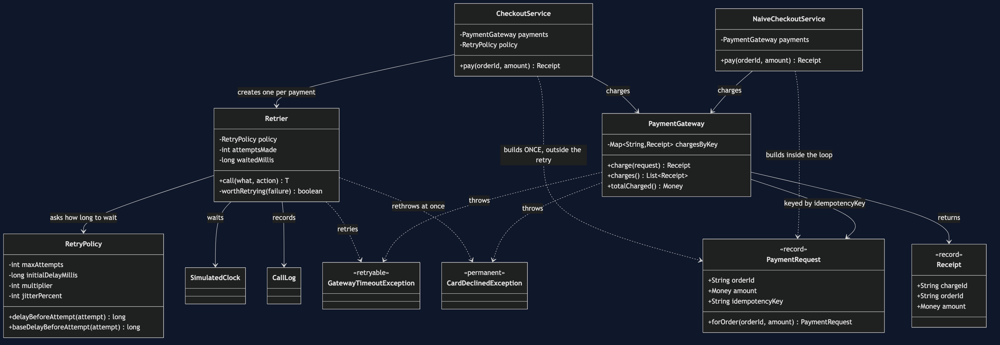
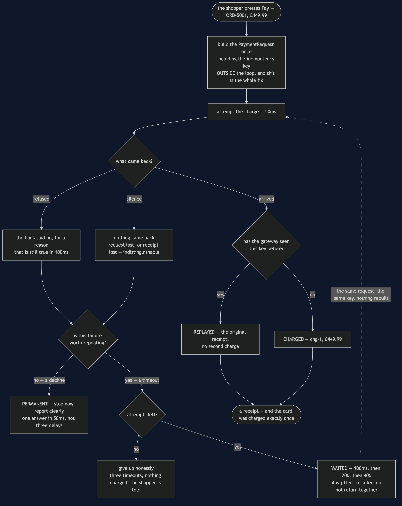
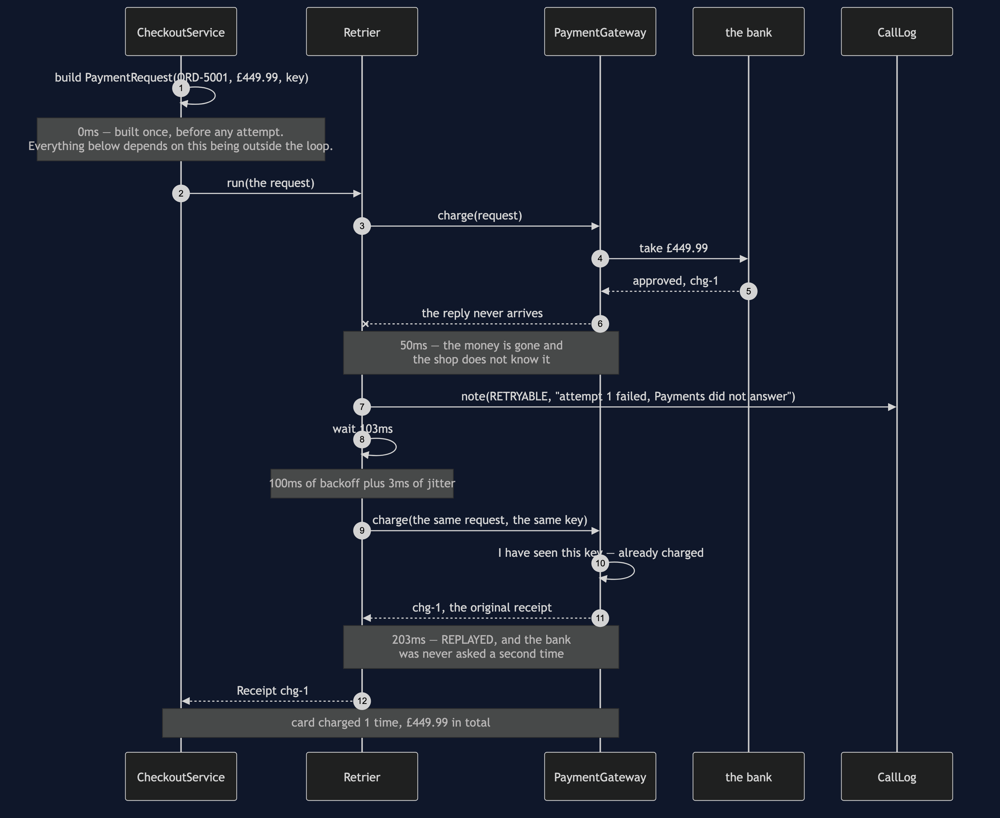
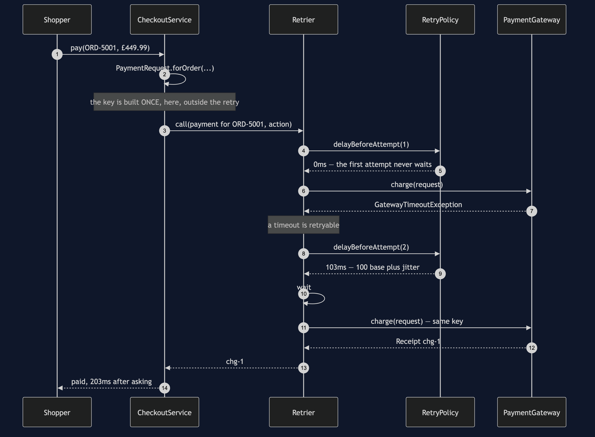
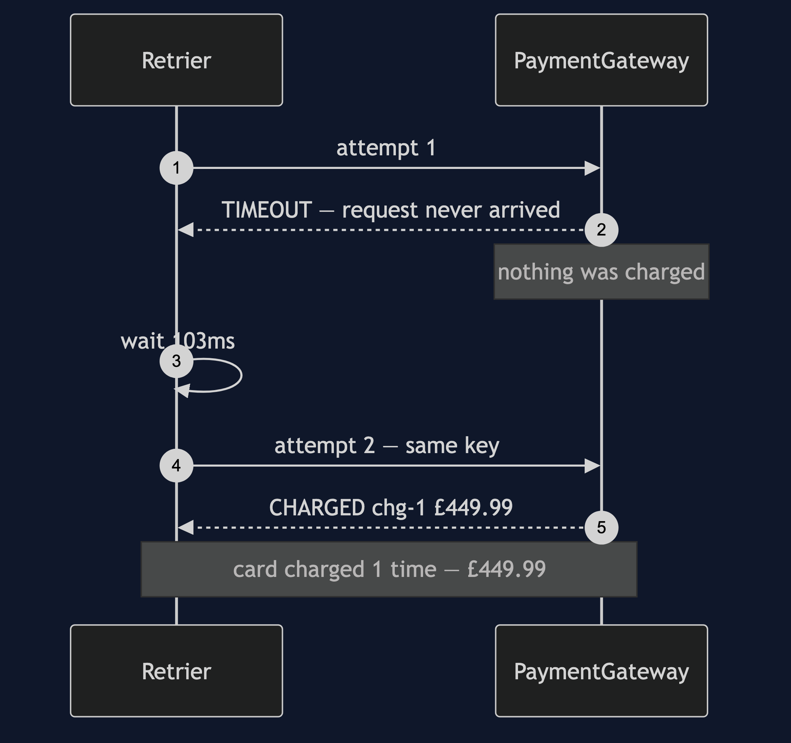
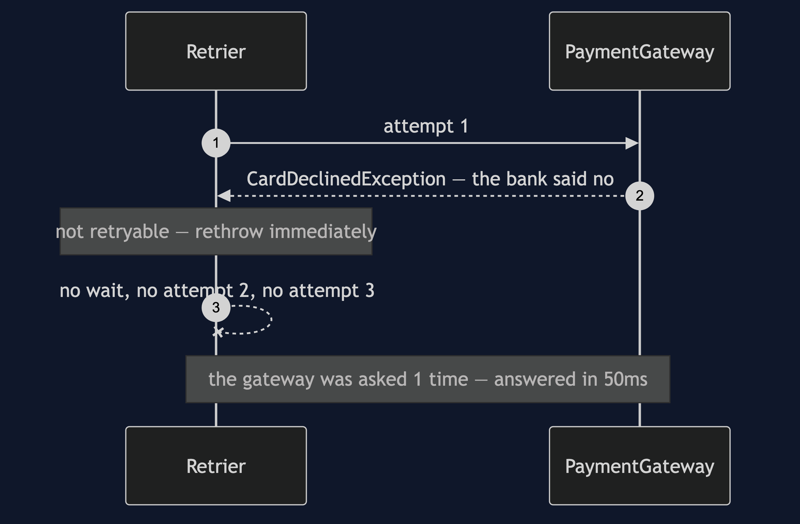
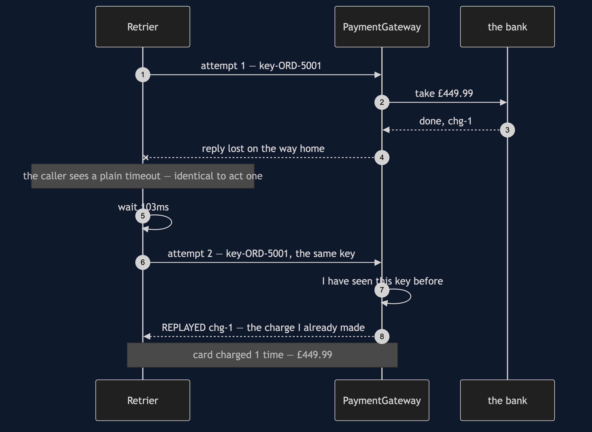
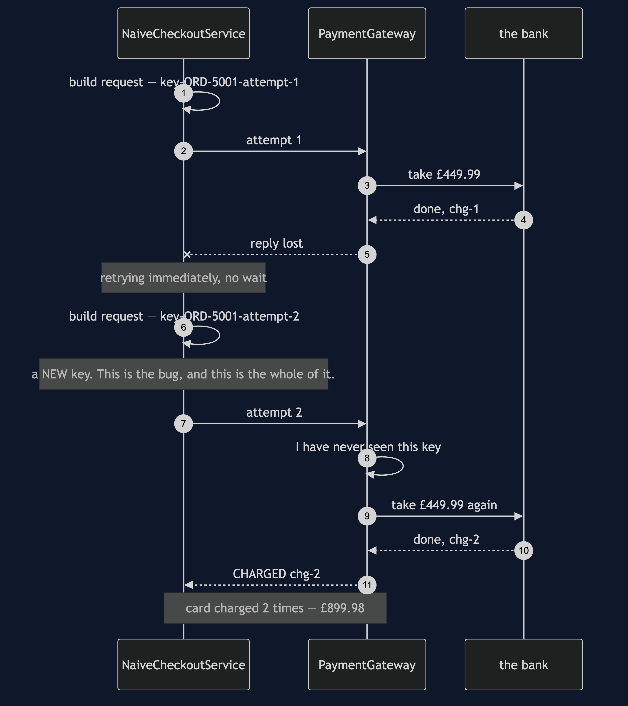
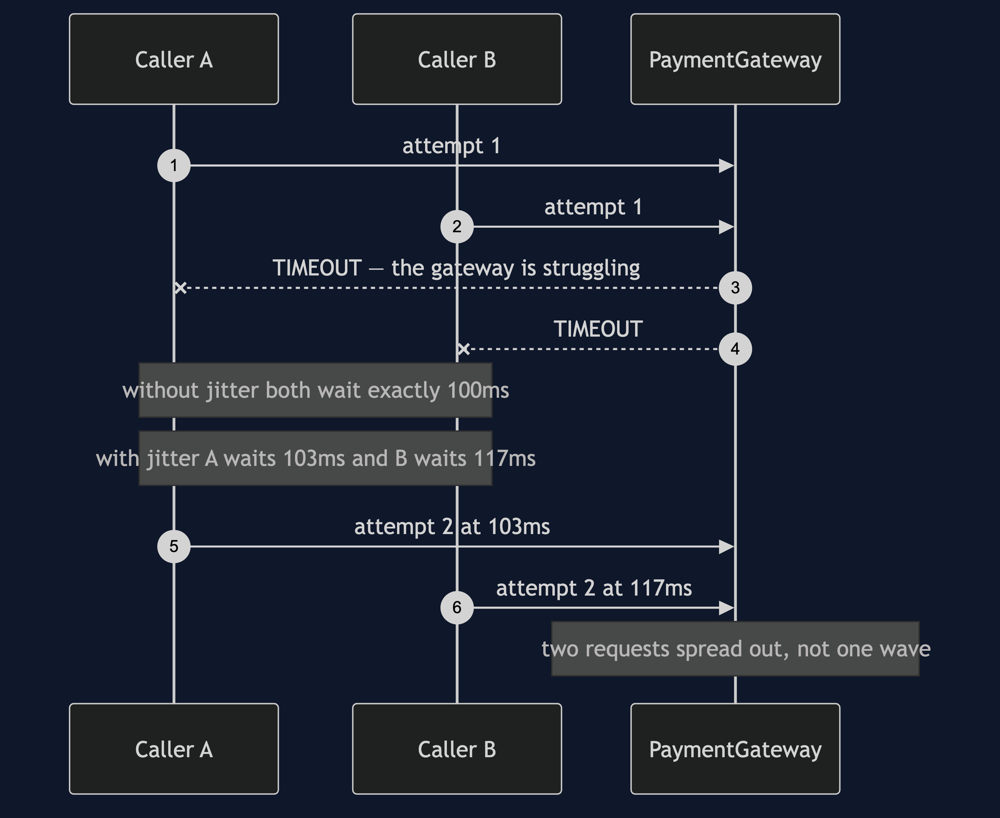

Retry with Backoff
In plain words: if a call fails for a reason that might not happen again, try it once or twice more — but wait a little longer before each attempt, and be sure that trying twice cannot do the job twice.
Everyday analogy: you ring someone and the call does not connect. You redial. If it still does not connect you wait a moment before trying again, rather than jabbing the button thirty times — partly because jabbing will not help, and partly because everybody jabbing at once is why the line is busy. Waiting longer each time is what "backoff" means.
In the shop, the flaky thing is the payment gateway. It fails about one call in five, and almost always works on the next attempt: a dropped connection, not a declined card. Failing a customer's checkout for that is throwing money away.
The two halves, and the one people skip
A retry is safe when both of these are true:
- The failure is genuinely temporary.
- Doing the operation twice cannot do it twice.
The first half is the one everybody thinks about. The second half is the one that charges people twice for an espresso machine. Nothing a retrier does can supply it — it has to come from the caller, as an idempotency key: a value that says to the gateway "if you have seen this key before, you have already done this job; do not do it again, just tell me what happened last time".
What the demo prints
Four acts, same order, same £449.99, same flaky gateway. The number to watch is always the last line: how many times the card was charged.
1. A timeout that recovers — the case retrying is for
0ms -> 50ms Payments TIMEOUT request never arrived
50ms -> 50ms Retrier RETRYABLE attempt 1 failed: Payments did not answer
153ms -> 153ms Retrier WAITED 103ms before attempt 2
153ms -> 203ms Payments CHARGED chg-1 £449.99
203ms -> 203ms Retrier RECOVERED payment for ORD-5001 succeeded on attempt 2
card charged 1 time, £449.99 in totalA checkout that would have failed went through. Note the wait: 103 milliseconds, not 100. The extra three are jitter — a small random amount added to every wait so that a thousand callers who failed at the same instant do not all come back at the same instant.
2. A declined card — the case retrying is not for
0ms -> 50ms Payments DECLINED the bank said no
50ms -> 50ms Retrier PERMANENT not retrying: card declined for ORD-5001
the gateway was asked 1 timeA refused card is refused for a reason, and the reason is still true a hundred milliseconds later. Retrying it buys nothing, costs the shopper three delays, and turns one clear answer into a vague one. Telling a timeout apart from a decline is half of what this pattern is.
3. The reply is lost after the card is charged
0ms -> 50ms Payments CHARGED-THEN-LOST chg-1 taken, reply lost
50ms -> 50ms Retrier RETRYABLE attempt 1 failed: Payments did not answer
153ms -> 203ms Payments REPLAYED key already charged, returning chg-1
card charged 1 time, £449.99 in totalThis is the realistic failure and the dangerous one. From the caller's side it looks exactly like act 1 — a timeout, nothing more. It cannot tell whether the request was lost on the way out or the receipt was lost on the way home. It does not have to: the retry carried the same key, the gateway recognised it, and handed back the charge it had already made.
4. The same failure, with the loop everybody writes first
0ms -> 50ms Payments CHARGED-THEN-LOST chg-1 taken, reply lost
50ms -> 50ms NaiveCheckout RETRYING attempt 1 failed, going again immediately
50ms -> 100ms Payments CHARGED chg-2 £449.99
card charged 2 times, £899.98 in totalThe shopper paid twice for one espresso machine. Read the output again and notice what is not there: no exception, no error log, no failing test. The order looks perfect. The only evidence is on a bank statement, and it surfaces as a phone call two days later.
NaiveCheckoutService is three lines and has three faults, none of which shows up as a failure:
- it builds the request inside the loop, so every attempt carries a new key;
- it waits not at all, so when the gateway is slow because it is overloaded, this is the overload;
- it cannot tell a timeout from a decline, so it asks the bank three times.
The first of those is the double charge, and it is a one-line difference. CheckoutService builds the request outside the retry. That is the entire fix.
Run it
./gradlew run # the four acts above
./gradlew test # 21 testsThe tests are the proof
RetryTest— a transient timeout recovers on attempt two; three timeouts give up honestly with nothing charged; the waits go 100, 200, 400; jitter stays inside its band and separates two callers; a declined card is not retried even once and is reported in 50ms rather than after three delays; and a lost reply after a real charge still charges the card exactly once.NaiveCheckoutServiceTest— every test in it passes, includingitDoubleChargesOnALostReply, which asserts £899.98 leaving the customer's account. That is why it is written down: the bug is not detectable by asking "did it throw".DemoRunsTest— the demo is teaching material, so a test keeps it working.
No test sleeps. SimulatedClock only moves when the retrier moves it, so the backoff costs nothing in wall-clock time and the suite finishes in about a second.
One JVM, no infrastructure
No Docker, no Spring Retry, no Resilience4j, no network. PaymentGateway is an ordinary object that can be told to time out, to decline, or — the interesting one — to take the money and then lose the reply. A JDK is all you need.
Technologies and versions
Nothing here is a range and nothing is latest: a course that worked last year and does not work today is worse than one that never took the dependency.
| What | Version | Why it is here |
|---|---|---|
| Java | 21 | The repository standard, requested through the Gradle toolchain block |
| Gradle | 9.2.1 | The wrapper in this directory; no separate install needed |
| JUnit 5 | 5.10.2 | The 21 tests, through junit-bom so the Jupiter artefacts cannot disagree |
That is the entire list, and the short version of it is the point. This project has no runtime dependency at all — the dependencies block in build.gradle names nothing but JUnit, and JUnit is testImplementation. There is no Resilience4j, no Spring Retry, no HTTP client and no container. Every one of the twelve projects in this category is built the same way, so a reader who can run one can run all of them, offline, with a JDK and nothing else.
Where this sits
Retry is what you do when the instance you chose does not answer, so it follows naturally from load balancing: the obvious retry is a retry against a different instance. The pattern immediately after this one, the circuit breaker, exists because retry has a failure mode of its own — retrying a service that is properly down turns a slow system into a dead one.
The idempotency key introduced here gets a project of its own later, in idempotent-consumer-pattern, where the same idea protects a message that is delivered twice.
Learning Material
| Document | What it covers |
|---|---|
docs/problem-statement.md | One call in five failing, the three-line loop that fixes it, and the shopper it charges twice |
docs/retry-pattern-explained.md | The pattern from an engaged tone, the two decisions, and the half that is usually skipped |
docs/class-diagram.md | The types, and the arrow that is missing — the retrier has never heard of payments |
docs/architecture-diagram.md | Who is responsible for what, which side of the network each part lives on, and where the key is made |
docs/data-flow-diagram.md | One checkout end to end: the two questions asked after a failure, and the loop that carries the same key |
docs/sequence-diagram.md | The lost receipt in call order — and the second attempt that never reaches the bank |
docs/uml-diagram.md | One attempt step by step, then all four acts as sequences, plus why jitter exists |
docs/animation.html | The same checkout meeting three different failures, one step at a time, in a browser |
docs/prerequisites.md | What you need to know, what you explicitly do not, and 60-second primers on idempotency and backoff |
docs/session.md | A one-hour taught session with exercises |
docs/spec.md | The generated specification, with measured test counts and timings |
docs/youtube.md | Title, description and chapters for the video |
video/README.md | The video pipeline, the scene list, and how to rebuild it |
The pattern in one picture
The class diagram, and the thing to look for is an arrow that does not exist: Retrier has no line to PaymentGateway. It retries something that might work, and has never heard of payments.

What runs where
The lower half is the literal truth: one JVM, a loop and a clock. The upper half is what it models — a shop, somebody else's payment gateway, and a bank, with the idempotency key crossing the boundary unchanged on every attempt.

How the data moves
One checkout end to end, including both questions asked after a failure: is this worth repeating, and have I any attempts left. The request is built above the loop, and every arrow back round carries the same key.

Who calls whom, in order
The dangerous failure in call order: the card is charged at 50ms, the receipt is lost, the shop retries at 153ms — and the bank is never asked a second time.

All six sequences
The full set from docs/uml-diagram.md, in the order that document argues them.
One. One attempt that recovers, step by step. The three beats every act is built from: attempt, decide, wait.

Two. A timeout that recovers. The case retrying is for. A checkout that would have failed goes through on attempt two.

Three. A declined card. The case retrying is not for. One clear answer in 50ms instead of three delays and a vague one.

Four. The reply that got lost. The realistic failure. The money is gone, the shop does not know it, and the key makes the retry safe anyway.

Five. The same failure, with a plain loop. A new key on the second attempt, a second charge, £899.98 — and no exception, no error log and no failing test.

Six. Why jitter exists. Two callers that failed at the same instant, and what happens if they both come back at the same instant.

Video
The narrated walkthrough is built from video/scenes.py by video/build_video.sh. It runs about sixteen minutes across sixteen scenes, and the rendered file is not committed — see the repository README for why — so producing it takes about ten minutes on macOS.
Also available with a framework
Retry with Resilience4j Pattern reruns this idea on a real framework, and shows what the framework adds and where it can undo the pattern. Watch this project first.